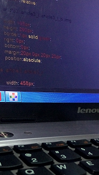

自从HTML5推出后，W3C和各大浏览器厂商都在加紧推动规范发展和实现，尤其是手机浏览器对规范的支持程度，已成为国内浏览器宣传的卖点。对于 W3C的正式规范，大多数都已经被现代浏览器实现，而我们更应关注快速发展中的Working Draft规范。它们不仅对实际开发有帮助，更重要的是它们代表了Web未来的发展方向。
WebComponents规范定义了未来的HTML组件，其中最重要的部分是ShadowDOM和CustomElement，除此之外还包括HTML模板、HTML imports和Decorators。
Shadow DOM能 将组件的代码和使用者的代码彻底分离，通过在文档渲染时插入一颗DOM子树，但这子树并不在主DOM树中，因而外部的CSS无法直接影响Shadow DOM中的元素；当然，Shadow DOM能提供事件API、Javascript API、CSS API供外部控制。
Custom Element则允许开发者自定义HTML标签，让页面更语义化的同时，还能为元素加入属性和方法，以提供特定的功能供外部调用。
WebDriver规范和 Selenium 2 WebDriver 自动化测试框架 API 十分类似，它取代了嵌入到被测Web应用中的Javascript，由浏览器直接支持的WebDriver，避免了Javascript安全模型的限制，还能利用操作系统级的调用来模拟用户输入。